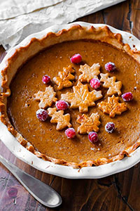

1 (3-pound) butternut squash, peeled, seeded, and cubed
3 garlic cloves, chopped
1 tablespoon chopped fresh sage
½ tablespoon minced fresh rosemary
1 teaspoon grated fresh ginger
3 to 4 cups vegetable broth
Freshly ground black pepper
For serving
Chopped parsley
Toasted pepitas
Crusty bread
Instructions
Heat the oil in a large pot over medium heat. Add the onion, salt, and fresh pepper and sauté until soft, 5 to 8 minutes. Add the squash and cook until it begins to soften, stirring occasionally, for 8 to 10 minutes.
Add the garlic, sage, rosemary, and ginger. Stir and cook 30 seconds to 1 minute, until fragrant, then add 3 cups of the broth. Bring to a boil, cover, and reduce heat to a simmer. Cook until the squash is tender, 20 to 30 minutes.
Let cool slightly and pour the soup into a blender, working in batches if necessary, and blend until smooth. If your soup is too thick, add up to 1 cup more broth and blend. Season to taste and serve with parsley, pepitas, and crusty bread.
Cook ravioli according to package directions. Meanwhile, in a Dutch oven, saute garlic in butter for 1 minute. Add squash and spinach; cook until spinach is wilted, 2-3 minutes longer. Stir in cream, broth and salt. Bring to a gentle boil; cook until slightly thickened, 6-8 minutes.
Drain ravioli; add to squash mixture. Toss to coat. Sprinkle with walnuts.
Great Pumpkin Pie

Ingredients
Sugared Cranberries
1 cup (100g) fresh cranberries (do not use frozen)
3/4 cup (180ml) water
1 and 1/4 cups (250g) granulated sugar, divided
Pumpkin Pie
Pie Dough 2 crusts: 1 for bootom, 1 for leaf decor
egg wash: 1 large egg beaten with 1 tbs milk
one 15-ounce can (425g) pumpkin puree
3 large eggs
1 and 1/4 cups (250g) pakced light or dark brown sugar
1 tablespoon (8g) cornstarch
1/2 teaspoon salt
1 and 1/2 teaspoon ground cinnamon
1/2 teaspoon ground ginger
1 and 1/4 cups (250g) pakced light or dark brown sugar
1 tablespoon (8g) cornstarch
1/2 teaspoon salt
1 and 1/2 teaspoon ground cinnamon
1/2 teaspoon ground ginger
1/4 teaspoon ground or grated nutmeg
1/8 teaspoon ground cloves
1/8 fresh ground pepper
1 cup (240ml) heavy cream
1/4 cup (60ml) milk
Directions
If you want to decorate the pie with sugared cranberries, start them the night before because they need to sit for several hours. Place cranberries in a large heatproof bowl. Set aside. In a medium saucepan set over medium heat, bring the water and 3/4 cup (150g) of sugar to a simmer, whisking until the sugar has dissolved. Remove the pan from heat and allow to cool for 5 minutes. Pour the sugar syrup over the cranberries and stir. Cover the bowl and set aside for 15 minutes. Line a baking sheet with parchment paper or a silicone baking mat. Using a slotted spoon, transfer the cranberries from the sugar syrup and place them on the prepared baking sheet. Allow to dry, uncovered, for 1 hour. Pour remaining 1/2 cup (100g) sugar into a large bowl. Toss the cranberries in the sugar, coating them all the way around. Place on a parchment paper- or silicone baking mat-lined baking sheet and let them dry uncovered for at least 1 hour at room temperature or in the refrigerator. Cover tightly and store in the refrigerator for up to 3 days. For more uses, see how to make sugared cranberries.
Make the pie crust through step 5 according to my directions and video tutorial in my pie crust recipe. Or use your favorite pie dough or store-bought.
Preheat oven to 375°F (190°C).
Roll out the chilled pie crust: Remove 1 disc of pie dough from the refrigerator. On a lightly floured work surface, roll the dough out into a 12-inch circle. Make sure to turn the dough about a quarter turn after every few rolls. Carefully place the dough into a 9 by 2-inch deep dish pie dish (this is the one I use; it is 1.75-inches deep). Tuck it in with your fingers, making sure it is tightly pressed into the pie dish. Fold any dough overhang back into the dish to form a thick rim around the edges. Crimp the edges with a fork or flute the edges with your fingers. Review my how to crimp and flute pie crust tutorial if you need extra help with this step. Brush edges lightly with egg wash mixture.
Par-bake the crust: Line the pie crust with parchment paper. Crunching up the parchment paper is helpful so that you can easily shape it into the crust. Fill with pie weights or dried beans. (Note that you will need at least 2 standard sets of pie weights to fit.) Make sure the weights/beans are evenly distributed around the pie dish. Par-bake the crust for 10 minutes. Carefully remove the parchment paper/pie weights. Prick the bottom of the crust all over with a fork to create steam vents and return crust (without weights) to the oven for 7-8 more minutes or until the bottom is *just* starting to brown. (Review this how to par-bake pie crust page if you need extra help with this par-baking step.)
Make the pumpkin pie filling: Whisk the pumpkin, 3 eggs, and brown sugar together until combined. Add the cornstarch, salt, cinnamon, ginger, nutmeg, cloves, pepper, heavy cream, and milk. Vigorously whisk until everything is combined.
Pour pumpkin pie filling into the warm crust. Only fill the crust about 3/4 of the way up. (If using a deep dish pie dish as instructed, you should only have a little filling leftover. Use extra to make mini pies with leftover pie dough scraps if you would like.) Bake the pie until the center is almost set, about 55-60 minutes give or take. A small part of the center will be wobbly—that is ok. After 25 minutes of baking, be sure to cover the edges of the crust with aluminum foil or use a pie crust shield to prevent the edges from getting too brown. Check for doneness at minute 50, and then 55, and then 60, etc.
Once done, transfer the pie to a wire rack and allow to cool completely for at least 3 hours before garnishing and serving.
Decorate with sugared cranberries and pie crust leaves (see note). You will definitely have leftover cranberries… they are tasty for snacking. Serve pie with whipped cream if desired.
Cover leftovers tightly and store in the refrigerator for up to 5 days.